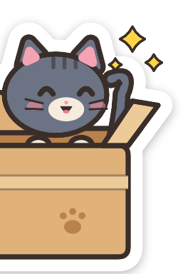
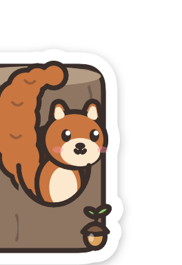
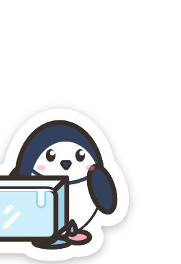
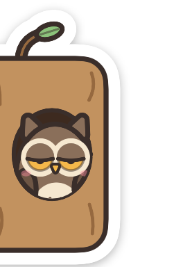
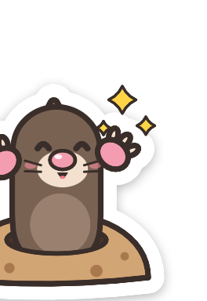

Lascialo al gatto. Riprendilo dopo.
PawShelf è una mensola per il tuo Mac. Un piccolo personaggio fa capolino dal bordo dello schermo e tiene file, cartelle, immagini, link e testo mentre passi da un’app all’altra.
Scarica dal Mac App StorePer macOS 14 o versioni successive, su Mac con Apple silicon e Intel.
Come funziona

Lascialo sulla linguetta
Trascina qualsiasi cosa sul personaggio al bordo dello schermo. Troppo lontano dal bordo? Scuoti il puntatore mentre trascini e la mensola si apre proprio lì accanto.

Continua a lavorare
Cambia app, Spaces o finestre a tutto schermo. La linguetta resta sul bordo e i tuoi elementi sono ancora lì anche dopo un riavvio.

Trascinalo fuori
Rilascia gli elementi nel Finder, in Mail, in una chat o in un modulo di caricamento. Selezionane più di uno per trascinarli fuori insieme.
Scegli chi custodisce le tue cose
Dodici personaggi, ognuno con il suo modo di conservare le cose. Alcune abitudini sono davvero utili: le guance del criceto mostrano quanto è piena la mensola, lo scoiattolo ti segnala gli elementi dimenticati e il ghiaccio del pinguino scioglie gli elementi che non ti servono più.
-


Gatto nella scatola
Nasconde le tue cose in una scatola di cartone
-


Criceto paffutello
Le guance si gonfiano man mano che la mensola si riempie
-


Scoiattolo delle ghiande
Si ricorda delle ghiande dimenticate e propone di fare ordine
-


Pinguino dei ghiacci
Tiene le tue cose in ghiaccio finché non si sciolgono
-


Gufo nottambulo
Sveglio di notte, assonnato di giorno
-


Gazza luccicante
Colleziona link e immagini luccicanti
-


Cane da riporto
Ti riporta le tue cose quando ti servono
-


Canguro tascabile
Tiene le tue cose al sicuro nel marsupio
-


Pellicano
Apre il suo grande becco per afferrare ciò che lasci cadere
-


Polpo a otto braccia
Tiene una cosa in ogni braccio
-


Talpa scavatrice
Conserva le tue cose nella sua tana
-


Tartaruga corazzata
Protegge le tue cose sotto il suo guscio
Passa il puntatore su un adesivo per salutare.
Tutto quello che una mensola deve fare
Cronologia degli appunti
Le tue ultime 50 copie, a portata di mano sulla mensola. Le copie che i gestori di password segnano come private non vengono mai registrate.
Raccogli i nuovi file
Scegli una cartella come Istantanee o Download e i nuovi file arrivano da soli sulla mensola.
Cerca nelle immagini
Trova un’istantanea grazie alle parole che contiene. Il testo viene riconosciuto sul tuo Mac.
Titoli e icone dei link
I link mostrano il titolo e l’icona della pagina, non solo un indirizzo.
Rimossi di recente
Hai rimosso qualcosa per errore? Recuperalo dal menu ⋯ della mensola.
Anteprima e condivisione
Premi la barra spaziatrice per Visualizzazione rapida o invia gli elementi con AirDrop e Messaggi.
Raccolte
Riunisci gli elementi correlati in raccolte e mostrane una alla volta.
In tutti gli Spaces
La linguetta ti segue in tutti gli Spaces e resta sopra le app a tutto schermo, sul bordo sinistro o destro.
Pronta per VoiceOver
Ogni pulsante ed elemento della mensola ha un’etichetta VoiceOver.
Niente da autorizzare in Impostazioni di Sistema
PawShelf non chiede l’accesso ad Accessibilità né a Registrazione schermo. Funziona nell’App Sandbox e apre solo ciò che gli affidi. Quello che metti sulla mensola resta sul tuo Mac.